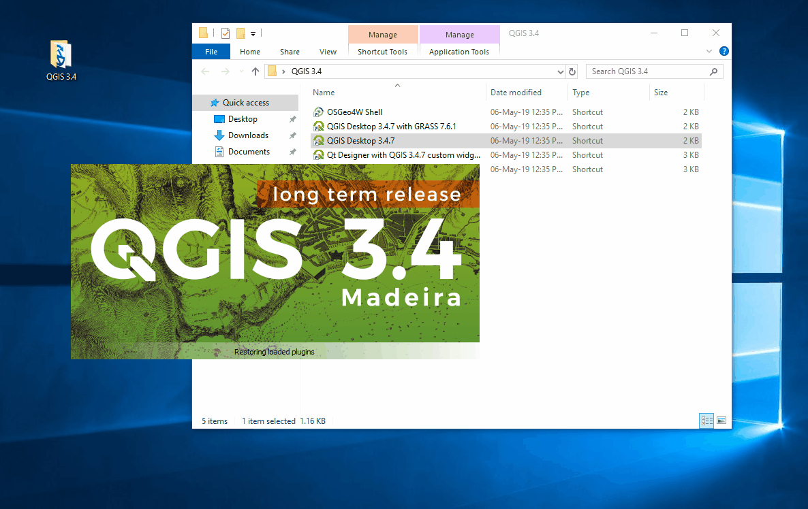
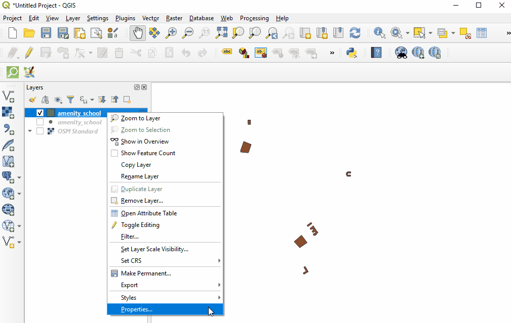
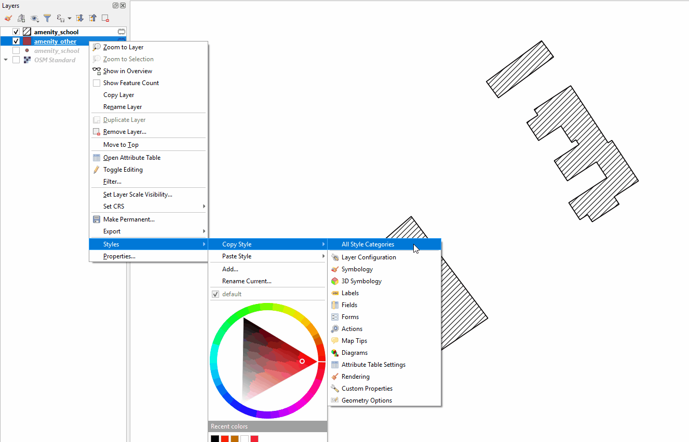
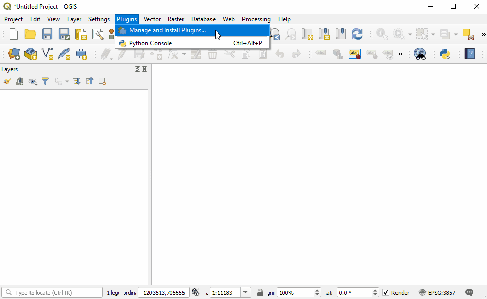
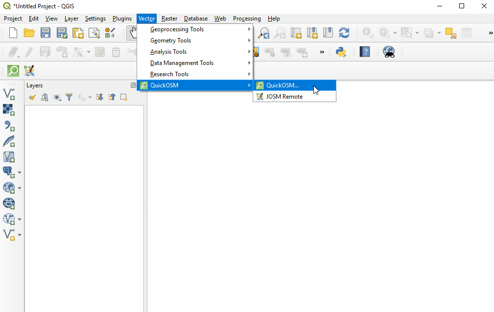

7.1 Introduction à QGIS
Cette section couvre les compétences de base nécessaires à l’utilisation de QGIS. Cela inclut des guides sur:
- Installation QGIS
- Navigation QGIS
- Ajout de données
- Couches de styles
- Installation de module(plugin), y compris QuickOSM et QuickMapServices
Aperçu
QGIS (or Quantum GIS) est un programme de système d’information géographique (SIG) gratuit et à source ouverte.Les programmes SIG permettent aux utilisateurs d'afficher, de gérer et d'analyser des informations géospatiales sur un ordinateur et de créer des produits cartographiques. Les données géospatiales utilisables dans les SIG incluent les images aériennes, les données GPS et les jeux de données spatiales. Une fois cette section terminée, un nouvel utilisateur doit être prêt à naviguer et à utiliser les données dans QGIS.
Ressources et supports de formation
Cette section présente une sélection de ressources destinées aux gestionnaires de projet, aux formateurs ou même aux auto-apprenants sur les sujets décrits ci-dessus.
 Les présentations suivantes peuvent être utilisées pour animer une formation ou un atelier.
Les présentations suivantes peuvent être utilisées pour animer une formation ou un atelier.
 La section suivante est conçue pour servir de matériel auto-rythmé pouvant être utilisé à la fois pendant les formations et par des apprenants auto-guidés.
La section suivante est conçue pour servir de matériel auto-rythmé pouvant être utilisé à la fois pendant les formations et par des apprenants auto-guidés.
.
Le guide suivant fournit des instructions et des captures d'écran de QGIS 3.4. Les versions antérieures ou ultérieures peuvent avoir différentes icônes et étapes.
Installation de QGIS
QGIS est disponible au téléchargement pour les systèmes d'exploitation suivants:
- Windows
- Mac OS
- Linux
Compétences et technologie nécessaires
- Ordinateur avec
- Système d'exploitation Windows, Mac, et Linux.
- Espace disque libre suffisant (environ 10 Go) et droits d'administrateur pour installer le logiciel
- Recommendé: souris d'ordinateur
Pour Windows Avant l'installation,vous devez déterminer si votre ordinateur fonctionne sur un système 32 bits ou 64 bits.
- Ouvrez le menu Démarrer, cliquez avec le bouton droit de la souris sur «Ordinateur», puis sélectionnez «Propriétés».
- Sous «Système», le type de système correct sera répertorié.
Installation à partir de fichiers partagés Si vous êtes hors ligne, vous devrez installer QGIS à partir d'un fichier partagé. Le programme d'installation de QGIS peut être téléchargé et partagé via USB. Ce fichier peut être partagé avec des collègues et d'autres personnes souhaitant installer le programme.
- Accédez au dossier partagé avec vous et téléchargé sur votre ordinateur
- Sélectionnez le dossier d'installation approprié en fonction de votre système d'exploitation (Windows 32 bits, Windows 64 bits ou Mac).
- Ouvrez le programme d'installation pour commencer le processus d'installation.
Installation à partir du site Web QGIS
Si vous avez une connexion Internet, vous pouvez télécharger directement à partir du site Web de QGIS. De plus, il est fortement recommandé de télécharger le logiciel directement à partir du site Web de QGIS chaque fois que cela est possible. Cela garantit que vous disposez de la version la plus récente du programme. Le fichier QGIS fait plus de 300 Mo et le téléchargement peut prendre beaucoup de temps en fonction de votre connexion Internet.
Installation:
- Visite: http://www.qgis.org/en/site/forusers/download.html
- Sélectionnez votre système d’exploitation approprié (Windows, Mac, Linux).
- Sous Windows, sélectionnez votre système approprié (32 bits ou 64 bits).
- Cliquez sur QGIS Standalone Installer pour lancer le processus de téléchargement.
- Une fois installé, ouvrez le programme d'installation pour commencer le processus d'installation.

Considérations lors de l'installation de QGIS pour un grand nombre d'individus
*Pensez à la connectivité et à la capacité Internet avant d'installer QGIS pour un grand nombre de personnes via Internet. Il est vivement recommandé qu'avant la formation / l'atelier, les fichiers d'installation soient téléchargés et soient coller sur des clés USB pour une installation hors ligne.
- Lors du téléchargement du programme d’installation hors ligne pour un grand groupe, veillez à télécharger un programme d'installation pour tous les systèmes d'exploitation. Remarque: il sera important de télécharger le programme d’installation de Windows pour les DEUX 32 bits et 64 bits
- Le processus de téléchargement et d'installation prend souvent plus de temps que prévu, en particulier si l'on tient compte des compétences techniques et de la compatibilité matérielle. Par conséquent, il est recommandé de commencer le processus de téléchargement et d’installation tôt dans la formation ou pendant les pauses pour assurer le bon déroulement du processus et le respect du programme. *Avant la formation / l'atelier, demandez aux participants de s'assurer qu'ils disposent suffisamment d'espace sur leurs ordinateurs (10 Go +) pour l'installation de QGIS
Navigation dans QGIS
Pour ouvrir QGIS, ouvrez le dossier QGIS sur votre bureau. Dans ce dossier, recherchez QGIS Desktop. Double-cliquez pour ouvrir ce programme

Le démarrage prend du temps? Ne panique pas! Le chargement de QGIS peut prendre quelques minutes.
Familiarisez-vous avec les différentes parties du navigateur QGIS, passez votre souris sur les icônes pour afficher le nom des divers outils.
Remarque: votre navigateur peut utiliser des outils différents de ceux illustrés ci-dessous.
-
Panneau Calques - This is where layers (i.e. imagery, building layers) C’est ici que les couches (par exemple, images, couches de construction) seront répertoriées. - L'ordre des couches dans le panneau a une incidence sur l'ordre des couches dans la carte. - En d'autres termes, la couche en haut de la liste apparaîtra en tant que couche supérieure de la carte.
-
Barres d'outils - La plupart des outils que vous utiliserez régulièrement dans QGIS apparaîtront sous forme d'icônes dans les barres d'outils situées en haut, telles que Enregistrer, Zoom, Panoramique. Le nombre de barres d’outils dépend des diverses fonctionnalités que vous avez activées ou installées.
-
Canevas de carte - Lorsque des calques sont ajoutés au panneau Calques, ils apparaissent dans le canevas de carte
-
Barre d'état - Les coordonnées, l'échelle et la projection apparaissent dans la barre d'état.

Ajout de données
Passez votre souris sur les outils jusqu'à trouver l'outil “Ajouter un calque vectoriel”. Cliquez sur cette icône pour ouvrir la boîte de dialogue Ajouter des données vectorielles

Cliquez sur le bouton ‘…’ sous Source et accédez à l’emplacement de votre calque vectoriel enregistré sur votre ordinateur (i.e. .shp, .geojson) Sélectionnez le fichier et ‘ouvrir’.

Pour plus d'informations sur l'exportation de données à partir de OSM, voir les instructions relatives à QuickOSM et aux outils d'exportation.
Styling Layers
Les couches de données peuvent être stylisées de trois manières: en ouvrant l'onglet Propriétés, en copiant d'autres couches dans le projet et en important un style .qml.
Pour sélectionner manuellement un style:
Cliquez avec le bouton droit sur le calque de points et sélectionnez ‘Propriétés’. (Autre: double-cliquez sur un calque dans le panneau Calques.)

Sélectionnez ‘Style’ dans le menu de gauche. De nombreux changements et styles peuvent être apportés dans cette fenêtre. Pour effectuer un changement de style de base, sélectionnez ‘Remplissage simple’ en haut de la fenêtre.Vous pouvez maintenant modifier la couleur de remplissage, le style de remplissage, la couleur du contour (contour), la largeur du contour (contour), le style du contour (contour) et bien plus encore.

Sélectionnez “Ok” pour voir vos modifications dans le projet.
Vous pouvez également choisir parmi différents styles prédéfinis dans la fenêtre de style principale.

Pour copier les styles d'un autre calque de données
Cliquez avec le bouton droit sur l'une des autres couches. Sélectionnez ‘Style’, puis ‘Copier le Style’, et ‘Toutes les catégories de styles’.

Ensuite, cliquez avec le bouton droit sur le calque auquel vous souhaitez appliquer le style. Sélectionnez ‘Style’, puis ‘Coller le style’, puis ‘Toutes les catégories de style’. Les styles des calques de points ne peuvent être copiés et collés que dans d'autres calques de points, les styles de calques de polygones ne peuvent être copiés et collés que dans d'autres calques de polygones, etc.

Styliser un calque à partir d'un fichier .qml importé Un fichier .qml contient des informations sur le style, y compris les étiquettes, exportées à partir d'une couche. Ce fichier peut être enregistré et partagé pour assurer une utilisation cohérente de styles particuliers, par exemple, si une organisation utilise un jeu de couleurs et une police particuliers pour toutes les cartes.
Avant d'importer un fichier .qml dans QGIS, vous devez recevoir ou télécharger un fichier .qml. Les fichiers .qml et les fichiers .shp de pratique peuvent être trouvés ici.
-
Double-cliquez sur un calque dans le panneau Calques ou cliquez avec le bouton droit de la souris sur le calque de points et sélectionnez ‘Propriétés’.
-
Sélectionnez ‘Style’ dans le menu de gauche.
-
Dans le coin inférieur gauche de la fenêtre Style, sélectionnez le bouton. Cliquez sur style de ‘chargement’.
-
Accédez au fichier .qml enregistré sur votre ordinateur et sélectionnez-le.
-
Cliquez sur “Ok”. Votre calque assumera tous les choix de style enregistrés dans le fichier .qml.
Installation de plug-ins
Outils et compétences requis
- Connexion Internet
- QGIS installé
- Navigation dans QGIS
- Pour QuickOSM: marquage OSM et modèles de données
Durée estimée: <5 minutes, selon la connexion Internet
Les plugins vous permettent d'étendre les fonctionnalités de QGIS. Ces plugins peuvent aller du téléchargement direct de données d'OSM à QGIS à des outils d'aide à l'analyse.
- Dans cet exercice, nous installerons et utiliserons deux plugins: QuickMapServices & QuickOSM
-
** QuickMapServices ** & ** QuickOSM
Remarque: la gestion et l'installation de plugins nécessitent une connexion Internet. Si le gestionnaire de plug-in ne fonctionne pas, vérifiez votre connexion Internet.
Considérations pour travailler avec de grands groupes et / ou dans des environnements avec une mauvaise connexion à internet Plug-in Manager nécessite une connexion Internet cohérente pour télécharger les plugins. Il est vivement recommandé aux animateurs de formation et d’ateliers de pré-télécharger des versions hors connexion pour les partager. Pour obtenir des instructions sur le téléchargement d'une version hors connexion d'un plug-in à partager, reportez-vous à la section 1.8.1 Logiciels et outils à partager.
Pour installer des plugins, cliquez sur l’option de menu Plugins ‣ Gérer et installer les plugins.

QuickMapServices
QuickMapServices vous permet d'ajouter des cartes de base en ligne gratuites à vos cartes QGIS, y compris les cartes de base OSM.
Remarques: étant donné que QuickMapServices fournit des fonds de carte en ligne, l'utilisation de ces couches nécessite une connexion Internet cohérente.
Dans la boîte de dialogue Gestionnaire de plug-in qui s'ouvre, recherchez le plug-in QuickMapServices. Pour ce faire, cliquez sur la barre de recherche et tapez ‘QuickMapServices’, le plugin apparaîtra dans la liste. Cliquez ensuite sur le bouton Installer un plugin.

Une fois installé, QuickMapServices est accessible dans le menu supérieur du Web ‣ QuickMapServices. Dans le sous-menu QuickMapServices, plusieurs types de fonds de carte, y compris OSM, sont accessibles.

Pour les images aériennes, dans le sous-menu QuickMapServices, ouvrez “Paramètres”. Cliquez sur l'onglet “Plus de services”. Sélectionnez “Get Contributed Pack”

Retournez au sous-menu QuickMapServices. Il y aura maintenant une longue liste d'options pour les fonds de carte, y compris Bing.

QuickOSM
QuickOSM vous permet de sélectionner et de télécharger des données OpenStreetMap à utiliser dans QGIS. QuickOSM fonctionne en extrayant des données spécifiques basées sur OSM en se basant sur des balises (paires clé = valeur) et une zone d'intérêt.

Once installed, QuickOSM can be accessed in the top menu Vector ‣ QuickOSM > QuickOSM
Une fois installé, QuickOSM est accessible dans le menu principal Vecteur ‣ QuickOSM> QuickOSM
Remarques: lors du téléchargement de données via QuickOSM, il est préférable d’avoir une couche de fond de carte ciblée sur votre domaine d’intérêt (voir QuickMapServices) et / ou au moins une couche de fichier de shapefile / geojson dans la zone d’intérêt. Ceci guide QuickOSM dans le téléchargement des données pour la zone d'intérêt correcte.
 Pour télécharger des données dans QuickOSM dans QGIS, vous devez créer des requêtes permettant de télécharger les données exactes dont vous avez besoin. QuickOSM facilite la création de requêtes, mais vous devez tout de même connaître les balises (clés et valeurs) pour générer des données. Il sera plus facile de vous souvenir de ces balises à mesure que vous gagnerez en expérience avec OSM - dans JOSM, QGIS et d’autres programmes. Vous trouverez ci-dessous quelques exemples de balises courantes utilisées dans les requêtes OSM.
| Key | Value |
|---|---|
| amenity | school |
| place_of_worship | |
| bar | |
| bank | |
| highway | primary |
| residential | |
| path | |
| office | government |
| ngo | |
| shop | clothes |
| tailor |
Dans la fenêtre contextuelle QuickOSM, vous devez au minimum taper: key, value, et sélectionner l'extension.
Conseils:
-
Key: Pour les ressources, les clés et les valeurs à utiliser, voir Balisage OSM et modèles de données.
-
Value: Plusieurs valeurs peuvent être combinées en les séparant par une virgule (par exemple: commodité = école, hôpital). Pour télécharger toutes les valeurs possibles d’une clé (par exemple, amenity = *), laissez le champ de valeur vide.
-
Extent: La sélection de l'étendue choisit la zone dans laquelle QuickOSM va rechercher et télécharger des données. Vous pouvez sélectionner plusieurs options lors du choix de l'étendue:
- In:
- Around:
- Canvas Extent:
- Layer Extent:
- Not Spatial:
L’étendue du canevas de carte convient mieux si vous n’avez pas de shapefile/ geojson qui couvre votre zone d’intérêt (c’est-à-dire les limites administratives) et / ou une petite zone d’intérêt. Pour baser votre étendue sur un calque, utilisez le menu déroulant à droite pour sélectionner le calque approprié.

Une fois que vous avez fourni votre clé et votre valeur, et sélectionné votre étendue, cliquez sur ‘Exécuter la requête’.
Si votre requête ne fonctionne pas:
- Avez-vous utilisé des lettres majuscules dans vos clés et vos valeurs? Assurez-vous que les clés et les valeurs sont en minuscule. Par exemple: key = amenity value = school PAS key = Amenity value = ÉCOLE
- Avez-vous utilisé l'orthographe correcte dans vos clés et vos valeurs? Assurez-vous que les clés et les valeurs sont orthographiées EXACTEMENT comme dans les guides OSM. Sinon, QuickOSM cherchera la mauvaise étiquette. Par exemple: key = amenity PAS key = amenities
Remarque: trop de données à télécharger peuvent surcharger l'API ou s'avérer trop lourdes pour une connexion Internet lente. Si vous rencontrez des difficultés pour télécharger des données, essayez de réduire la zone ou de limiter le téléchargement de données en modifiant vos balises. Par exemple, le téléchargement de tous les bâtiments en Afrique, même dans certaines villes, est trop volumineux pour QuickOSM. Essayez plutôt de télécharger une zone plus petite ou de la limiter à tous les building = school.
Ressources supplémentaires

- Manuel de formation QGIS : https://docs.qgis.org/2.18/en/docs/training_manual/
- Tutoriel de QGIS : https://www.qgistutorials.com/en/docs/learning_resources.html
- Autres instructions d'installation de QGIS: https://docs.qgis.org/testing/en/docs/user_manual/introduction/getting_started.html#installing-qgis